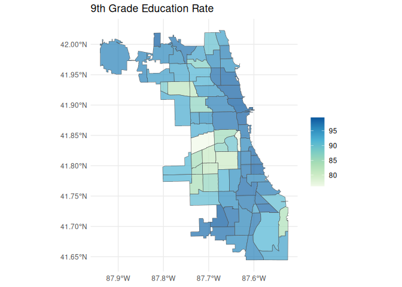

Explore and Import Metopio Powered Health Atlases.
Metopio helps many public health departments build curated data platforms. These data platforms are a convenient way for community members and researchers to explore and download public health data. With the same spirit in mind, this package aims to make interfacing with these data portals within R more painless and reproducible.
Note: This is an unofficial R wrapper for Metopio Health Atlases. This package is in no way affiliated with the Metopio or any of the public health departments Metopio serves.
Examples of Metopio health atlases include:
- Chicago Health Atlas: https://chicagohealthatlas.org/
- Cook County Health Atlas: https://cookcountyhealthatlas.org/
- University of Illinois Cancer Center Data Hub: https://uicc.metop.io/
- Idaho Oregon Community Health Atlas: https://idahooregoncommunityhealthatlas.org/
- Northern Kentucky Atlas: https://atlas.northernkentuckyusa.com/
- Allen County Health Atlas: https://allencountyhealthatlas.org/
- Kane County Health Atlas: https://kanehealthatlas.org/
- Contra Costa Health Atlas: https://atlas.cchealth.org/
Installation
You can install healthatlas from CRAN.
install.packages("healthatlas")Or, you can install the development version of healthatlas from R-universe with:
install.packages("healthatlas", repos = c("https://ryanzomorrodi.r-universe.dev", "https://cloud.r-project.org"))Usage
Set your health atlas. For this example, we are going to use the Chicago Health Atlas, and can do so, by providing the Chicago Health Atlas URL to ha_set().
ha_set("chicagohealthatlas.org")We can list all the topics (aka indicators) present within Chicago Health Atlas using ha_topics(). The most important column here is the topic_key which can be used to identify the topic within subsequent functions.
ha_topics(progress = FALSE)
#> # A tibble: 410 × 7
#> topic_name topic_key topic_description topic_units topic_keywords
#> <chr> <chr> <chr> <chr> <list>
#> 1 9th grade education r… EDA Residents 25 or … % of resid… <chr [2]>
#> 2 ACA marketplace enrol… ENR Number of plan s… plan selec… <chr [5]>
#> 3 Accidents mortality VRAC Number of people… count of d… <chr [2]>
#> 4 Accidents mortality r… VRACR Age-adjusted rat… per 100,00… <chr [2]>
#> 5 Active business licen… CHANVYI Count of active … licenses p… <chr [1]>
#> 6 Adult asthma HCSATH Number of adults… count of a… <chr [2]>
#> 7 Adult asthma rate HCSATHP Percent of adult… % of adults <chr [2]>
#> 8 Adult binge drinking HCSBD Number of adults… count of a… <chr [1]>
#> 9 Adult binge drinking … HCSBDP Percent of adult… % of adults <chr [1]>
#> 10 Adult diabetes HCSDIA Number of adults… count of a… <chr [1]>
#> # ℹ 400 more rows
#> # ℹ 2 more variables: topic_datasets <list>, topic_subcategories <list>Then, we can explore what populations, time periods, and geographic scales that data is available for using ha_coverage(). Again, the most important columns here are the key columns which can be used to specify the data desired.
ha_coverage("EDA", progress = FALSE)
#> # A tibble: 156 × 7
#> topic_key population_key population_name population_grouping period_key
#> <chr> <chr> <chr> <chr> <chr>
#> 1 EDA "" Full population "" 2011-2015
#> 2 EDA "" Full population "" 2007-2011
#> 3 EDA "F" Female "Sex" 2016-2020
#> 4 EDA "F" Female "Sex" 2015-2019
#> 5 EDA "F" Female "Sex" 2014-2018
#> 6 EDA "" Full population "" 2009-2013
#> 7 EDA "" Full population "" 2018-2022
#> 8 EDA "" Full population "" 2017-2021
#> 9 EDA "" Full population "" 2006-2010
#> 10 EDA "" Full population "" 2015-2019
#> # ℹ 146 more rows
#> # ℹ 2 more variables: layer_key <chr>, layer_name <chr>Now, we can import our data using ha_data() specifying the keys we identified above.
data <- ha_data(
topic_key = "EDA",
population_key = "",
period_key = "2018-2022",
layer_key = "neighborhood"
)
data
#> # A tibble: 77 × 7
#> geoid topic_key population_key period_key layer_key value standardError
#> <chr> <chr> <chr> <chr> <chr> <dbl> <dbl>
#> 1 1714000-35 EDA "" 2018-2022 neighborh… 96.1 4.64
#> 2 1714000-36 EDA "" 2018-2022 neighborh… 98.5 4.64
#> 3 1714000-37 EDA "" 2018-2022 neighborh… 96.0 6.93
#> 4 1714000-38 EDA "" 2018-2022 neighborh… 97.0 4.69
#> 5 1714000-39 EDA "" 2018-2022 neighborh… 98.4 7.34
#> 6 1714000-4 EDA "" 2018-2022 neighborh… 96.1 3.18
#> 7 1714000-40 EDA "" 2018-2022 neighborh… 97.5 6.86
#> 8 1714000-41 EDA "" 2018-2022 neighborh… 99.0 5.27
#> 9 1714000-42 EDA "" 2018-2022 neighborh… 96.3 3.63
#> 10 1714000-1 EDA "" 2018-2022 neighborh… 93.9 2.72
#> # ℹ 67 more rowsLet’s create a map. But first, we will need to download the Community Areas geographic layer. We can do that with ha_layer().
layer <- ha_layer(
layer_key = "neighborhood"
)
layer
#> Simple feature collection with 77 features and 6 fields
#> Geometry type: MULTIPOLYGON
#> Dimension: XY
#> Bounding box: xmin: -87.94011 ymin: 41.64454 xmax: -87.52419 ymax: 42.02305
#> Geodetic CRS: WGS 84
#> First 10 features:
#> geoid layer_key name population state
#> 1 1714000-1 neighborhood Rogers Park (Chicago, IL) 55454 IL
#> 2 1714000-10 neighborhood Norwood Park (Chicago, IL) 41069 IL
#> 3 1714000-11 neighborhood Jefferson Park (Chicago, IL) 26201 IL
#> 4 1714000-12 neighborhood Forest Glen (Chicago, IL) 19579 IL
#> 5 1714000-13 neighborhood North Park (Chicago, IL) 17522 IL
#> 6 1714000-14 neighborhood Albany Park (Chicago, IL) 48549 IL
#> 7 1714000-15 neighborhood Portage Park (Chicago, IL) 63038 IL
#> 8 1714000-16 neighborhood Irving Park (Chicago, IL) 51911 IL
#> 9 1714000-17 neighborhood Dunning (Chicago, IL) 43120 IL
#> 10 1714000-18 neighborhood Montclare (Chicago, IL) 14412 IL
#> notes geometry
#> 1 Far North Side MULTIPOLYGON (((-87.65456 4...
#> 2 Far North Side MULTIPOLYGON (((-87.78002 4...
#> 3 Far North Side MULTIPOLYGON (((-87.75264 4...
#> 4 Far North Side MULTIPOLYGON (((-87.72642 4...
#> 5 Far North Side MULTIPOLYGON (((-87.7069 41...
#> 6 Far North Side MULTIPOLYGON (((-87.70404 4...
#> 7 Northwest Side MULTIPOLYGON (((-87.75264 4...
#> 8 Northwest Side MULTIPOLYGON (((-87.69475 4...
#> 9 Northwest Side MULTIPOLYGON (((-87.77621 4...
#> 10 Northwest Side MULTIPOLYGON (((-87.78942 4...Now we can make our map!
library(dplyr)
library(ggplot2)
map_data <- layer |>
left_join(data, "geoid")
ggplot(map_data) +
geom_sf(aes(fill = value), alpha = 0.7) +
scale_fill_distiller(palette = "GnBu", direction = 1) +
labs(
title = "9th Grade Education Rate",
fill = ""
) +
theme_minimal()